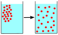

diffusion

Definition: Diffusion is the net movement of anything (for example, atoms, ions, molecules, energy) generally from a region of higher concentration to a region of lower concentration. Diffusion is driven by a gradient in Gibbs free energy or chemical potential. In the context of Quantum Physics, diffusion refers to spreading of wave packets. In simplest example, a Gaussian wave packet will spread along the spatial dimensions, as time progresses, resulting in diffusion of the wave packet energy. It is possible to diffuse "uphill" from a region of lower concentration to a region of higher concentration, like in spinodal decomposition. Diffusion is a stochastic process due to the inherent randomness of the diffusing entity and can be used to model many real-life stochastic scenarios. Therefore, diffusion and the corresponding mathematical models are used in several fields, beyond physics, such as statistics, probability theory, information theory, neural networks, finance and marketing etc.
Source: Wikipedia
Wikipedia Page (Something wrong with this association? Let us know.)
Wikidata Page (Something wrong with this association? Let us know.)
Occurs in: